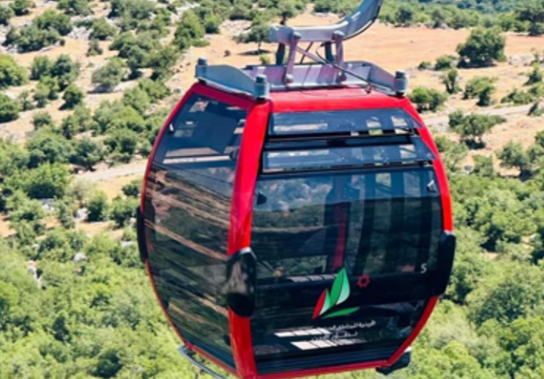
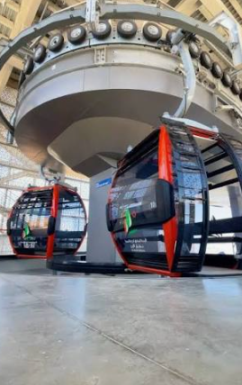

محطة عجلون · نقطة الانطلاق

من هون بتبلّش الحكاية
اكتشف الأردن
من منظور جديد.
طبيعة، تاريخ، ومغامرة. من خضرة عجلون لنجوم وادي رم، اختار دربك وخلّي الحكاية تبدأ.
18 وجهة. ألف حكاية.
خطّط رحلتككل وجهة،
بداية حكاية.
صور تأخذك للمكان، وتفاصيل تساعدك تختار.
أفضل وقت، مواعيد الزيارة، ورسوم الدخول بمكان واحد.
ما لقينا وجهة بهذا الاسم. جرّب اسم ثاني أو غيّر الفلتر.
الطريق جزء من الحكاية
أي درب يشبهك؟
أماكن تلهمك للرحلة.
ونشمي يرتّبها حسب أيامك.
شمال، وسط، وجنوب
شوف وين
بياخذك الدرب.
اختار وجهة وشوف موقعها.
ولما تقرر، افتح اتجاهاتها على Google Maps.
من الفضول إلى الخطة
رحلتك،
على طريقتك.
اختار الأماكن اللي عجبتك ورتّبها.
خطتك بتنحفظ على هذا الجهاز.
احفظ محطاتك وبرنامج نشمي في حسابك، واسترجعها وقت ما بدك.
المحطات محفوظة على هذا الجهاز. الحفظ في حسابك يتم عند اختيارك.
محطّاتك 0
المحطات حسب ترتيبك. استخدم نشمي لبرنامج يناسب الوقت والميزانية.
قبل ما تطلع
خذ راحتك.
وخذ فكرة.
هل هذا خط تلفريك حقيقي؟
هذه رحلة افتراضية فنية تربط وجهات الأردن. تلفريك عجلون تجربة محلية منفصلة، ولا يربط هذه المدن فعليًا.
كيف أعرف الأسعار ومواعيد الزيارة؟
من زر «المصدر الرسمي» في تفاصيل كل وجهة. الأسعار والمواعيد تختلف حسب فئة الزائر والموسم؛ راجع الجهة المشغلة قبل الزيارة.
كيف أختار تجربة تناسبني؟
افتح تفاصيل المكان لتشوف طبيعة الأرض والوقت المقترح. اسأل المشغّل عن إتاحة المسارات، إمكانية الوصول، وما تشمله التجربة قبل الحجز.
وين بتنحفظ خطتي؟
محطاتك تُحفظ في متصفحك، وتقدر تحفظ نسخة في حسابك من «حفظ واسترجاع الرحلة». الحفظ السحابي يرسل المحطات وتفضيلات البرنامج إلى Firebase، ولا يرسل سجل المحادثة. محادثة نشمي المتصلة تعالج رسالتك عبر Firebase AI Logic. ما بنحجز أي خدمة تلقائيًا.
هل التكلفة نهائية وشاملة؟
نشمي يفصل رسوم الدخول المعروفة عن تقديرات الطعام والمبيت والمواصلات. الأنشطة الخاصة والأسعار غير المعروفة تظهر منفصلة؛ إذا في رسوم ناقصة، يُعرض المجموع كتكلفة جزئية.